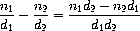
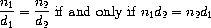

2.1 Introduction to Data Abstraction
2.1 データ抽象化序論
In section 1.1.8, we noted that a procedure used as an element in creating a more complex procedure could be regarded not only as a collection of particular operations but also as a procedural abstraction. That is, the details of how the procedure was implemented could be suppressed, and the particular procedure itself could be replaced by any other procedure with the same overall behavior. In other words, we could make an abstraction that would separate the way the procedure would be used from the details of how the procedure would be implemented in terms of more primitive procedures. The analogous notion for compound data is called data abstraction. Data abstraction is a methodology that enables us to isolate how a compound data object is used from the details of how it is constructed from more primitive data objects.
より複雑な手続きを作成する際の要素として使われる手続きは、特定の演算の集まりと見なし得るだけでなく、手続き的抽象化とも見なし得るのだ、ということを、1.1.8節で述べた。 つまり、手続きがどのように実装されていたのか、という詳細は隠され得るし、特定の手続き自体が、まったく同じ振る舞いをする任意の他の手続きに置き換えられ得る。 換言すれば、手続きが使われるだろう方法を、手続きがより原始的な手続きを用いてどのように実装されるだろうかという詳細から、分離するであろう抽象概念を、私たちは作れるだろう。 複合的データについての類似の概念は、データ抽象化と呼ばれる。 データ抽象化とは、複合的データオブジェクトの使われ方を、複合的データオブジェクトがより原始的なデータオブジェクトからどのように構築されているのか、という詳細から、切り離すことを可能にしてくれる方法論なのである。
The basic idea of data abstraction is to structure the programs that are to use compound data objects so that they operate on ``abstract data.'' That is, our programs should use data in such a way as to make no assumptions about the data that are not strictly necessary for performing the task at hand. At the same time, a ``concrete'' data representation is defined independent of the programs that use the data. The interface between these two parts of our system will be a set of procedures, called selectors and constructors, that implement the abstract data in terms of the concrete representation. To illustrate this technique, we will consider how to design a set of procedures for manipulating rational numbers.
データ抽象化の基本的な考えは、複合的データオブジェクトを使うことになるプログラムを、「抽象データ」上で動作するように、構築することである。 つまり、データについては、目下の課題を実行するために絶対に必要だというわけではない想定をしない、というような方法で、プログラムがデータを使うべきである。 同時に、「具体的な」データ表現は、データを使うプログラムとはどくりつに定義される。 私たちのシステムにおけるこれら二つの部分の間のインタフェイスは、具体的な表現を用いて抽象的なデータを実装する手続き——セレクタおよびコンストラクタと呼ばれるもの——の集合となるだろう。 この技法を説明するために、私たちは、有理数を操作するための手続きの集合を設計する方法を考えることにしよう。
2.1.1 Example: Arithmetic Operations for Rational Numbers
2.1.1 例: 有理数に対する算術演算
Suppose we want to do arithmetic with rational numbers. We want to be able to add, subtract, multiply, and divide them and to test whether two rational numbers are equal.
私たちは有理数を使って算術がしたいのだ、と想定しよう。 私たちは、有理数を足したり、引いたり、掛けたり、割ったりできるようでありたいし、二つの有理数が等しいかどうかを調べられるようでありたい。
Let us begin by assuming that we already have a way of constructing a rational number from a numerator and a denominator. We also assume that, given a rational number, we have a way of extracting (or selecting) its numerator and its denominator. Let us further assume that the constructor and selectors are available as procedures:
分子と分母から有理数を構築する方法が既にある、と想定することから始めよう。 また、ある有理数が与えられたときに、その分子と分母を抽出 (または選択) する方法もあるのだ、と想定しよう。 さらに、コンストラクタとセレクタが、次のような手続きとして利用可能だ、と想定しよう。
- (make-rat <n> <d>) returns the rational number whose numerator is the integer <n> and whose denominator is the integer <d>.
- (numer <x>) returns the numerator of the rational number <x>.
- (denom <x>) returns the denominator of the rational number <x>.
- (make-rat <n> <d>) は、分子が <n> という整数であり分母が <d> という整数であるような有理数を返す。
- (numer <x>) は、<x> という有理数の分子を返す。
- (denom <x>) は、<x> という有理数の分母を返す。
We are using here a powerful strategy of synthesis: wishful thinking. We haven't yet said how a rational number is represented, or how the procedures numer, denom, and make-rat should be implemented. Even so, if we did have these three procedures, we could then add, subtract, multiply, divide, and test equality by using the following relations:
私たちはここで、合成に関する強力な戦略——つまり、希望的観測——を使っている。 私たちはまだ、有理数がどう表現されるのか、についても述べていないし、numer と denom と make-rat という手続きがどう実装されるべきか、についても述べていない。 たとえそうであっても、もしこれら三つの手続きがあれば、以下の関係を使って、足し算、引き算、掛け算、割り算ができるだろうし、等しいかどうか調べることもできるだろう。





We can express these rules as procedures:
私たちはこれらの規則を手続きとして表現できる。
(define (add-rat x y) (make-rat (+ (* (numer x) (denom y)) (* (numer y) (denom x))) (* (denom x) (denom y)))) (define (sub-rat x y) (make-rat (- (* (numer x) (denom y)) (* (numer y) (denom x))) (* (denom x) (denom y)))) (define (mul-rat x y) (make-rat (* (numer x) (numer y)) (* (denom x) (denom y)))) (define (div-rat x y) (make-rat (* (numer x) (denom y)) (* (denom x) (numer y)))) (define (equal-rat? x y) (= (* (numer x) (denom y)) (* (numer y) (denom x))))
Now we have the operations on rational numbers defined in terms of the selector and constructor procedures numer, denom, and make-rat. But we haven't yet defined these. What we need is some way to glue together a numerator and a denominator to form a rational number.
numer と denom と make-rat という、セレクタおよびコンストラクタである諸手続きを使って定義された、有理数上の演算を、今や私たちは手にしている。 しかし、私たちはまだこれらを定義していない。 私たちに必要なものは、分子と分母をくっつけて有理数を作り出すための、何らかの方法である。
Pairs
対
To enable us to implement the concrete level of our data abstraction, our language provides a compound structure called a pair, which can be constructed with the primitive procedure cons. This procedure takes two arguments and returns a compound data object that contains the two arguments as parts. Given a pair, we can extract the parts using the primitive procedures car and cdr.2 Thus, we can use cons, car, and cdr as follows:
データ抽象化における具体的なレベルを実装できるようにするために、私たちの言語は、
(define x (cons 1 2)) (car x) 1 (cdr x) 2
Notice that a pair is a data object that can be given a name and manipulated, just like a primitive data object. Moreover, cons can be used to form pairs whose elements are pairs, and so on:
原始的データオブジェクトとちょうど同じように、対が、名前を与えることも操作することもできるデータオブジェクトなのだ、ということに注意してほしい。 さらに、cons は、要素が対であるような対などを作り出すためにも、使われ得る。
(define x (cons 1 2)) (define y (cons 3 4)) (define z (cons x y)) (car (car z)) 1 (car (cdr z)) 3
In section 2.2 we will see how this ability to combine pairs means that pairs can be used as general-purpose building blocks to create all sorts of complex data structures. The single compound-data primitive pair, implemented by the procedures cons, car, and cdr, is the only glue we need. Data objects constructed from pairs are called list-structured data.
対同士を結合するためのこの能力が、どういうわけで、あらゆる種類の複雑なデータ構造を作成するための汎用的な基本的構成要素として対が使えるということを意味するのか、ということを、2.2節で見ることにしよう。 たった一つの複合的データのプリミティブである対——cons と car と cdr という手続きによって実装されている——が、私たちに必要な唯一の接着剤である。 対から構築されたデータオブジェクトは、リスト構造データと呼ばれる。
Representing rational numbers
有理数を表現する
Pairs offer a natural way to complete the rational-number system. Simply represent a rational number as a pair of two integers: a numerator and a denominator. Then make-rat, numer, and denom are readily implemented as follows:3
対は、有理数システムを完成させるための自然な方法を与えてくれる。 単純に、有理数を、二つの整数——つまり分子と分母——の対として表現せよ。 すると、make-rat と numer と denom は、すぐに以下のとおり実装される3。
(define (make-rat n d) (cons n d)) (define (numer x) (car x)) (define (denom x) (cdr x))
Also, in order to display the results of our computations, we can print rational numbers by printing the numerator, a slash, and the denominator:4
また、計算の結果を表示するために、分子とスラッシュと分母を印字することで有理数を印字することができる4。
(define (print-rat x) (newline) (display (numer x)) (display "/") (display (denom x)))
Now we can try our rational-number procedures:
さて、これで私たちは有理数についての手続きを試すことができる。
(define one-half (make-rat 1 2)) (print-rat one-half) 1/2 (define one-third (make-rat 1 3)) (print-rat (add-rat one-half one-third)) 5/6 (print-rat (mul-rat one-half one-third)) 1/6 (print-rat (add-rat one-third one-third)) 6/9
As the final example shows, our rational-number implementation does not reduce rational numbers to lowest terms. We can remedy this by changing make-rat. If we have a gcd procedure like the one in section 1.2.5 that produces the greatest common divisor of two integers, we can use gcd to reduce the numerator and the denominator to lowest terms before constructing the pair:
最後の例が示すとおり、私たちの有理数の実装は、有理数を約分しない。 make-rat を変更することで、この点を改善できる。 もし、二つの整数の最大公約数を作り出す、1.2.5節のものと似たような、gcd という手続きがあれば、対を構築する前に、gcd を使って分子と分母を約分することができる。
(define (make-rat n d) (let ((g (gcd n d))) (cons (/ n g) (/ d g))))
Now we have
すると以下のようになる。
(print-rat (add-rat one-third one-third)) 2/3
as desired. This modification was accomplished by changing the constructor make-rat without changing any of the procedures (such as add-rat and mul-rat) that implement the actual operations.
これは所望のとおりである。 この修正は、実際の演算を実装する手続き (たとえば add-rat や mul-rat など) のいずれをも変更せずに、コンストラクタたる make-rat を変更することにより、達成された。
Exercise 2.1. Define a better version of make-rat that handles both positive and negative arguments. Make-rat should normalize the sign so that if the rational number is positive, both the numerator and denominator are positive, and if the rational number is negative, only the numerator is negative.
練習問題2.1. 正と負の両方の引数をうまく扱うような、make-rat の改善版を定義せよ。 make-rat は、もし有理数が正なら分子と分母の両方が正となるように、そして、もし有理数が負なら分子のみが負となるように、符号を正規化すべきである。
(define (make-rat n d) (cond ((and (>= n 0) (> d 0)) (cons n d)) ((and (>= n 0) (< d 0)) (cons (- n) d)) ((and (< n 0) (> d 0)) (cons n d)) ((and (< n 0) (< d 0)) (cons (- n) (- d))) (else (display "*** error ***"))))
2.1.2 Abstraction Barriers
2.1.2 抽象化の防壁
Before continuing with more examples of compound data and data abstraction, let us consider some of the issues raised by the rational-number example. We defined the rational-number operations in terms of a constructor make-rat and selectors numer and denom. In general, the underlying idea of data abstraction is to identify for each type of data object a basic set of operations in terms of which all manipulations of data objects of that type will be expressed, and then to use only those operations in manipulating the data.
複合的データとデータ抽象化についての更なる例を続ける前に、有理数の例で持ち上がった問題のいくつかについて考えてみよう。 私たちは、コンストラクタである make-rat と、セレクタである numer および denom を用いて、有理数の演算を定義した。 一般に、データ抽象化の根底にある概念とは、各型のデータオブジェクトについて、その型のデータオブジェクトについてのどの操作を表現するのにも使われるであろうような基本的な演算の集合を特定すること、そして、データを操作する際には、それらの演算のみを使うこと、である。
We can envision the structure of the rational-number system as shown in figure 2.1. The horizontal lines represent abstraction barriers that isolate different ``levels'' of the system. At each level, the barrier separates the programs (above) that use the data abstraction from the programs (below) that implement the data abstraction. Programs that use rational numbers manipulate them solely in terms of the procedures supplied ``for public use'' by the rational-number package: add-rat, sub-rat, mul-rat, div-rat, and equal-rat?. These, in turn, are implemented solely in terms of the constructor and selectors make-rat, numer, and denom, which themselves are implemented in terms of pairs. The details of how pairs are implemented are irrelevant to the rest of the rational-number package so long as pairs can be manipulated by the use of cons, car, and cdr. In effect, procedures at each level are the interfaces that define the abstraction barriers and connect the different levels.
私たちは、有理数システムの構造を図2.1のように思い描くことができる。 横線は、システムの異なる「レベル」間を隔離する、抽象化の防壁を表す。 各レベルで、防壁は、データ抽象化を利用する (上側の) プログラムを、データ抽象化を実装している (下側の) プログラムから分離する。 有理数を使うプログラムは、有理数パッケージにより「一般利用のために」提供された手続き——add-rat と sub-rat と mul-rat と div-rat と equal-rat?——のみを使って、有理数を操作する。 そして今度は、これらの手続きが、コンストラクタとセレクタたる make-rat と numer と denom のみを用いて実装されており、さらに今度は、これらのコンストラクタとセレクタ自体が対を使って実装されている。 対がどう実装されるかという詳細は、cons と car と cdr を用いることにより対を操作できる限りは、有理数パッケージの残りの部分には無関係である。 実際、各レベルの手続きは、抽象化の防壁を定義するとともに異なるレベル間をつなぐ、インタフェイスなのである。
This simple idea has many advantages. One advantage is that it makes programs much easier to maintain and to modify. Any complex data structure can be represented in a variety of ways with the primitive data structures provided by a programming language. Of course, the choice of representation influences the programs that operate on it; thus, if the representation were to be changed at some later time, all such programs might have to be modified accordingly. This task could be time-consuming and expensive in the case of large programs unless the dependence on the representation were to be confined by design to a very few program modules.
この簡潔な考え方には多くの利点がある。 利点の一つは、プログラムをより保守しやすく、かつ、変更しやすくする、という点だ。 どの複雑なデータ構造も、プログラミング言語により提供される原始的なデータ構造を使った様々な方法で表現できる。 もちろん、表現の選択は、その表現の上で動作するプログラムに影響する。よって、もし、いつか後の時点で表現を変えることになったら、それに応じて、すべてのそのようなプログラムを変更しなくてはならなかもしれない。 この作業は、表現への依存が設計によりごく少数のプログラムモジュールだけに制限されることになっていたのでもない限り、大規模なプログラムの場合において、時間を食うだろうし、高くつくだろう。
For example, an alternate way to address the problem of reducing rational numbers to lowest terms is to perform the reduction whenever we access the parts of a rational number, rather than when we construct it. This leads to different constructor and selector procedures:
たとえば、有理数を約分する問題に対処するための代わりの方法は、有理数を構築するときではなくむしろ、有理数の部分にアクセスするたびに、約分を実行することである。 これは、コンストラクタとセレクタの別の手続きにつながる。
(define (make-rat n d) (cons n d)) (define (numer x) (let ((g (gcd (car x) (cdr x)))) (/ (car x) g))) (define (denom x) (let ((g (gcd (car x) (cdr x)))) (/ (cdr x) g)))
The difference between this implementation and the previous one lies in when we compute the gcd. If in our typical use of rational numbers we access the numerators and denominators of the same rational numbers many times, it would be preferable to compute the gcd when the rational numbers are constructed. If not, we may be better off waiting until access time to compute the gcd. In any case, when we change from one representation to the other, the procedures add-rat, sub-rat, and so on do not have to be modified at all.
この実装と前の実装の違いは、いつ gcd を計算するのかという点にある。 もし、私たちにとっての有理数の典型的な利用において、同じ有理数の分子と分母に何度もアクセスするならば、有理数が構築されたときに gcd を計算するのが好ましいだろう。 もし、そうでなければ、アクセスするときまで待ってから gcd を計算する方がよいかもしれない。 いずれにせよ、一方の表現から他方の表現へと移行する場合に、add-rat や sub-rat などの手続きを変更する必要はまったくない。
Constraining the dependence on the representation to a few interface procedures helps us design programs as well as modify them, because it allows us to maintain the flexibility to consider alternate implementations. To continue with our simple example, suppose we are designing a rational-number package and we can't decide initially whether to perform the gcd at construction time or at selection time. The data-abstraction methodology gives us a way to defer that decision without losing the ability to make progress on the rest of the system.
表現への依存を少数のインタフェイス手続きだけに制約することは、私たちがプログラムを設計したり変更したりするのに役立つ。というのも、その制約により、代わりの実装を考慮する柔軟性を維持できるからだ。 私たちの簡単な例を続けるため、私たちが有理数パッケージを設計しているところだとし、かつ、gcd を構築の際に実行すべきか選択の際に実行すべきかを、私たちは最初に決定できないものとしよう。 システムの残りの部分で進捗する能力を失わないままで、その決定を延期するやり方を、データ抽象化の方法論は与えてくれる。
Exercise 2.2. Consider the problem of representing line segments in a plane. Each segment is represented as a pair of points: a starting point and an ending point. Define a constructor make-segment and selectors start-segment and end-segment that define the representation of segments in terms of points. Furthermore, a point can be represented as a pair of numbers: the x coordinate and the y coordinate. Accordingly, specify a constructor make-point and selectors x-point and y-point that define this representation. Finally, using your selectors and constructors, define a procedure midpoint-segment that takes a line segment as argument and returns its midpoint (the point whose coordinates are the average of the coordinates of the endpoints). To try your procedures, you'll need a way to print points:
練習問題2.2. 平面上の線分を表現する問題を考えよう。 各線分は、点の対——つまり、始点と終点の対——として表現される。 コンストラクタである make-segment と、セレクタである start-segment および end-segment——これらは点を使って線分の表現を定義するものである——を定義せよ。 さらに、点は、数の対——つまり、x 座標と y 座標の対——として表現できる。 これにしたがって、コンストラクタである make-point と、セレクタである x-point および y-point——これらはこの表現を定義するものである——を規定せよ。 最後に、線分を引数として取ってその中点 (その座標が、両端点の座標の平均であるような点) を返すような、midpoint-segment という手続きを、君の作ったセレクタとコンストラクタを用いて定義せよ。 君の手続きを試すために、点を印字する方法が必要だろう。
(define (print-point p) (newline) (display "(") (display (x-point p)) (display ",") (display (y-point p)) (display ")"))
(define (make-segment start-point end-point) (cons start-point end-point)) (define (start-segment segment) (car segment)) (define (end-segment segment) (cdr segment)) (define (make-point x y) (cons x y)) (define (x-point point) (car point)) (define (y-point point) (cdr point)) (define (midpoint-segment segment) (let ((s (start-segment segment)) (e (end-segment segment))) (make-point (/ (+ (x-point s) (x-point e)) 2) (/ (+ (y-point s) (y-point e)) 2))))
Exercise 2.3. Implement a representation for rectangles in a plane. (Hint: You may want to make use of exercise 2.2.) In terms of your constructors and selectors, create procedures that compute the perimeter and the area of a given rectangle. Now implement a different representation for rectangles. Can you design your system with suitable abstraction barriers, so that the same perimeter and area procedures will work using either representation?
練習問題2.3. 平面上の三角形の表現を実装せよ。 (ヒント: 君は練習問題2.2を利用したいかもね。) 君のコンストラクタとセレクタを使って、与えられた三角形の周長と面積を計算する手続きを作成せよ。 さてここで三角形の別の表現を実装せよ。 君は、抽象化の適切な防壁をともなったシステムを設計できるかな? ——設計できればその結果、どちらの表現を使っても、周長と面積の同じ手続きがうまく動くだろう。
面積はヘロンの公式で求めようか……
2.1.3 What Is Meant by Data?
2.1.3 データとはどういう意味なのか?
We began the rational-number implementation in section 2.1.1 by implementing the rational-number operations add-rat, sub-rat, and so on in terms of three unspecified procedures: make-rat, numer, and denom. At that point, we could think of the operations as being defined in terms of data objects -- numerators, denominators, and rational numbers -- whose behavior was specified by the latter three procedures.
私たちは2.1.1節で、有理数演算である add-rat や sub-ratなどを、明細が特定されていない三つの手続き——つまり、make-rat と numer と denom——を用いて実装することから、有理数の実装を始めた。 その時点で、私たちは、演算を、後者の三つの手続きにより振る舞いが指定されているデータオブジェクト——分子と分母と有理数——の観点から定義されているものと見なすことができただろう。
But exactly what is meant by data? It is not enough to say ``whatever is implemented by the given selectors and constructors.'' Clearly, not every arbitrary set of three procedures can serve as an appropriate basis for the rational-number implementation. We need to guarantee that, if we construct a rational number x from a pair of integers n and d, then extracting the numer and the denom of x and dividing them should yield the same result as dividing n by d. In other words, make-rat, numer, and denom must satisfy the condition that, for any integer n and any non-zero integer d, if x is (make-rat n d), then
しかし、データとは厳密には何を意味するのだろうか? 「与えられたセレクタとコンストラクタにより実装されるものなら何でも」と言うだけでは不十分だ。 明らかに、あらゆる任意の三つの手続きの集合が、有理数の実装の適切な基礎として用をなし得る、というわけではない。 n と d という整数の対から x という有理数を構築している場合、x の numer と denom を抽出して、抽出したそれらのもので割り算をすることは、n を d で割ることと、同じ結果になるべきである。 換言すれば、make-rat と numer と denom は、次の条件を満たさねばならない——任意の整数 n と任意の非零の整数 d に対して、もし x が (make-rat n d) ならば、以下のとおりである。
In fact, this is the only condition make-rat, numer, and denom must fulfill in order to form a suitable basis for a rational-number representation. In general, we can think of data as defined by some collection of selectors and constructors, together with specified conditions that these procedures must fulfill in order to be a valid representation.5
実際、これは、make-rat と numer と denom が、有理数の表現の適切な基礎となるために満たさねばならない、唯一の条件である。 一般には、私たちは、データを、セレクタとコンストラクタの何らかの集まりと、これらの手続きが妥当な表現であるために満たさねばならない条件とによって、定義されているものだ、と見なすことができる5。
This point of view can serve to define not only ``high-level'' data objects, such as rational numbers, but lower-level objects as well. Consider the notion of a pair, which we used in order to define our rational numbers. We never actually said what a pair was, only that the language supplied procedures cons, car, and cdr for operating on pairs. But the only thing we need to know about these three operations is that if we glue two objects together using cons we can retrieve the objects using car and cdr. That is, the operations satisfy the condition that, for any objects x and y, if z is (cons x y) then (car z) is x and (cdr z) is y. Indeed, we mentioned that these three procedures are included as primitives in our language. However, any triple of procedures that satisfies the above condition can be used as the basis for implementing pairs. This point is illustrated strikingly by the fact that we could implement cons, car, and cdr without using any data structures at all but only using procedures. Here are the definitions:
この観点は、「高いレベルの」データオブジェクト——有理数など——を定義するのに役立つだけでなく、低い方のレベルのオブジェクトを定義するのにも役立つ。 対——私たちが、有理数を定義するために用いたものである——の概念を考えよう。 私たちは、対が何であるか、と実際に言ったことは決してなく、ただ、対に関する演算を行うために、cons と car と cdr という手続きを、言語が提供している、と言っただけだ。 しかし、これら三つの演算について私たちが知る必要がある唯一のことは、もし cons を用いて二つのオブジェクトをくっつけたら、car と cdr を使ってそれらのオブジェクトを取り戻せる、ということなのだ。 つまり、これらの演算は、任意のオブジェクト x と y に対して、もし z が (cons x y) ならば、(car z) は x であり (cdr z) は y である、という条件を満たす。 実際、これら三つの手続きがプリミティブとして言語に含まれている、と私たちは述べた。 しかし、上記の条件を満たすような任意の三つ組の手続きを、対を実装するための基礎として使うことができる。 この点は、cons と car と cdr を、データ構造をまったく使わずに、ただ手続きのみを用いて実装し得ただろう、という事実によって、顕著に説明される。
(define (cons x y) (define (dispatch m) (cond ((= m 0) x) ((= m 1) y) (else (error "Argument not 0 or 1 -- CONS" m)))) dispatch) (define (car z) (z 0)) (define (cdr z) (z 1))
This use of procedures corresponds to nothing like our intuitive notion of what data should be. Nevertheless, all we need to do to show that this is a valid way to represent pairs is to verify that these procedures satisfy the condition given above.
このような手続きの使い方は、データが何であるべきかという、私たちの直観的概念のようなものには、合致しない。 それにもかかわらず、これが対を表現するための妥当な方法だ、と示すために私たちがしなくてはならないことは、ただ、これらの手続きが上記の条件を満たすことを証明することのみである。
The subtle point to notice is that the value returned by (cons x y) is a procedure -- namely the internally defined procedure dispatch, which takes one argument and returns either x or y depending on whether the argument is 0 or 1. Correspondingly, (car z) is defined to apply z to 0. Hence, if z is the procedure formed by (cons x y), then z applied to 0 will yield x. Thus, we have shown that (car (cons x y)) yields x, as desired. Similarly, (cdr (cons x y)) applies the procedure returned by (cons x y) to 1, which returns y. Therefore, this procedural implementation of pairs is a valid implementation, and if we access pairs using only cons, car, and cdr we cannot distinguish this implementation from one that uses ``real'' data structures.
注目すべき巧妙な点は、(cons x y) により返される値が、手続き——つまり、内部で定義された dispatch という手続きであり、これは、一つの引数を取り、その引数が0か1かに応じて x か y を返す——である、という点だ。 それに対応して、(car z) は、z を0に適用すること、と定義されている。 したがって、もし z が (cons x y) により作り出された手続きならば、0に適用された z は、x を生じるだろう。 このように、私たちは、(car (cons x y)) が所望のとおりに x を生じることを示した。 同様に、(cdr (cons x y)) は、(cons x y) により返された手続きを1に適用し、それにより y を返す。 したがって、対についての、この手続き的実装は、妥当な実装であり、もし私たちが cons と car と cdr のみを使って対にアクセスするなら、私たちは、この実装と、「現実の」データ構造を使う実装を区別できない。
The point of exhibiting the procedural representation of pairs is not that our language works this way (Scheme, and Lisp systems in general, implement pairs directly, for efficiency reasons) but that it could work this way. The procedural representation, although obscure, is a perfectly adequate way to represent pairs, since it fulfills the only conditions that pairs need to fulfill. This example also demonstrates that the ability to manipulate procedures as objects automatically provides the ability to represent compound data. This may seem a curiosity now, but procedural representations of data will play a central role in our programming repertoire. This style of programming is often called message passing, and we will be using it as a basic tool in chapter 3 when we address the issues of modeling and simulation.
対の手続き的表現を提示してみせることの要点は、私たちの言語がこういう方法でうまく動く、という点ではなく (Schemeは——そしてLispシステムは一般に——効率面の理由から、対を直接的に実装するのだ)、私たちの言語がこういう方法でうまく動くことも可能だ、という点である。 手続き的表現は、難解だとはいえ、対を表現するための完全に適切な方法である。というのも、この表現は、対が満たす必要のある唯一の条件を満たすからである。 この例は、手続きをオブジェクトとして操作する能力が、複合的データを表現する能力を自動的に与えてくれる、ということも実証している。 このことは、今は、ただ興味を引くものごとに思えるだけだろうが、データの手続き的表現は、私たちのプログラミング技術のレパートリーにおいて、中心的役割を果たすことになるだろう。 このようなプログラミングの流儀は、しばしばメッセージパッシングと呼ばれ、これを私たちは3章で、モデリングとシミュレーションの問題に対処するときに、基本的な道具として使っていることだろう。
Exercise 2.4. Here is an alternative procedural representation of pairs. For this representation, verify that (car (cons x y)) yields x for any objects x and y.
練習問題2.4. ここに、対の手続き的表現の、別の選択肢がある。 この表現について、任意の x と y というオブジェクトに対して (car (cons x y)) が x を生じる、ということを証明せよ。
(define (cons x y) (lambda (m) (m x y))) (define (car z) (z (lambda (p q) p)))
(car (cons x y)) を展開すると、consの定義より、 (car (lambda (m) (m x y))) となり、carの定義より、 ((lambda (m) (m x y)) (lambda (p q) p)) と展開できて、ここで関数適用により、 ((lambda (p q) p) x y) となって、ここでまた関数適用を行って、最終的に x を得る。
What is the corresponding definition of cdr? (Hint: To verify that this works, make use of the substitution model of section 1.1.5.)
これに対応する、cdr の表現は、どんなものだろうか? (ヒント: これがうまく動くことを証明するには、1.1.5節の代入モデルを利用せよ。)
; cdrの定義 (define (cdr z) (z (lambda (p q) q))) この定義が正しいことを示す。まず、 (cdr (cons x y)) を展開すると、consの定義より、 (cdr (lambda (m) (m x y))) となり、cdrの定義より、 ((lambda (m) (m x y)) (lambda (p q) q)) と展開できて、ここで関数適用により、 ((lambda (p q) q) x y) となって、ここでまた関数適用を行って、最終的に y を得る。
Exercise 2.5. Show that we can represent pairs of nonnegative integers using only numbers and arithmetic operations if we represent the pair a and b as the integer that is the product 2a 3b. Give the corresponding definitions of the procedures cons, car, and cdr.
練習問題2.5. もし、a と b の対を、2a 3b という積に等しい整数として表すなら、数と算術演算のみを使って非負整数の対を表せる、ということを示せ。 これに対応する、cons と car と cdr の手続きの定義を提示せよ。
ゲーデル数ですね。2と3は素数だから、素因数分解の一意性より、 n = 2a 3b が成立するような a と b は、n に対して一意に定まる。だから、n という数で、a と b の対を表せる。 (define (cons a b) (define (cons-iter i j result) (if (= i 0) (if (= j 0) result (cons-iter i (- j 1) (* 3 result))) (cons-iter (- i 1) j (* 2 result)))) (cons-iter a b 1)) (define (car n) (define (car-iter i count) (if (= (remainder i 2) 0) (car-iter (/ i 2) (+ count 1)) count)) (car-iter n 0)) (define (cdr n) (define (cdr-iter i count) (if (= (remainder i 3) 0) (cdr-iter (/ i 3) (+ count 1)) count)) (cdr-iter n 0)) ; 実行例 gosh> (cons 1 1) 6 gosh> (cons 0 0) 1 gosh> (cons 0 1) 3 gosh> (cons 1 0) 2 gosh> (cons 4 3) 432 gosh> (car 6) 1 gosh> (cdr 6) 1 gosh> (car 1) 0 gosh> (cdr 1) 0 gosh> (car 3) 0 gosh> (cdr 3) 1 gosh> (car 2) 1 gosh> (cdr 2) 0 gosh> (car 432) 4 gosh> (cdr 432) 3
Exercise 2.6. In case representing pairs as procedures wasn't mind-boggling enough, consider that, in a language that can manipulate procedures, we can get by without numbers (at least insofar as nonnegative integers are concerned) by implementing 0 and the operation of adding 1 as
練習問題2.6. 対を手続きとして表すことが、十分に驚嘆すべきことではなかった、という場合、次のことを考えてみよ——手続きを操作できる言語では、0と、1を足す演算とを、以下のように実装することで、(少なくとも非負整数に関する限りは) 数がなくても、なんとかやってゆける。
(define zero (lambda (f) (lambda (x) x))) (define (add-1 n) (lambda (f) (lambda (x) (f ((n f) x)))))
This representation is known as Church numerals, after its
inventor, Alonzo Church, the logician who invented the  calculus.
calculus.
この表現は、その考案者であるアロンゾ・チャーチ——λ計算を考案した論理学者——にちなんで、チャーチ数として知られている。
Define one and two directly (not in terms of zero and add-1). (Hint: Use substitution to evaluate (add-1 zero)). Give a direct definition of the addition procedure + (not in terms of repeated application of add-1).
one と two を直接的に (zero と add-1 を使わずに) 定義せよ。 (ヒント: 代入を使って (add-1 zero) を評価してみよ。) 加算手続きである + の、直接的な定義 (add-1 の繰り返し適用を使わないもの) を提示せよ。
; ヒントにしたがって代入してみる。 (add-1 zero) (lambda (f) (lambda (x) (f ( ( zero f) x) ) ) ) (lambda (f) (lambda (x) (f ( ((lambda (f) (lambda (x) x)) f) x) ) ) ) (lambda (f) (lambda (x) (f ( (lambda (x) x) x) ) ) ) (lambda (f) (lambda (x) (f ( x ) ) ) ) ; というわけで (define one (lambda (f) (lambda (x) (f (x)))))
2.1.4 Extended Exercise: Interval Arithmetic
2.1.4 発展的練習問題: 区間算術
Alyssa P. Hacker is designing a system to help people solve engineering problems. One feature she wants to provide in her system is the ability to manipulate inexact quantities (such as measured parameters of physical devices) with known precision, so that when computations are done with such approximate quantities the results will be numbers of known precision.
アリッサ・P・ハッカは、人々が工学的問題を解くのを手助けするシステムを設計しているところだ。 彼女が自分のシステムで提供したい特徴の一つは、既知の精度の、厳密でない量 (たとえば、物理的な器具で測定されたパラメタなど) を操作する能力だ。それにより、そういう近似的な量を使って計算が行われるときには、その結果は、既知の精度の数となるだろう。
Electrical engineers will be using Alyssa's system to compute electrical quantities. It is sometimes necessary for them to compute the value of a parallel equivalent resistance Rp of two resistors R1 and R2 using the formula
電気エンジニアは、電気的な量を計算するのにアリッサのシステムを使うだろう。 ときとして電気エンジニアには、以下の公式を用いて、二つの抵抗器 R1 と R2 の並列接続に等価な抵抗 Rp を計算することが必要である。
Resistance values are usually known only up to some tolerance guaranteed by the manufacturer of the resistor. For example, if you buy a resistor labeled ``6.8 ohms with 10% tolerance'' you can only be sure that the resistor has a resistance between 6.8 - 0.68 = 6.12 and 6.8 + 0.68 = 7.48 ohms. Thus, if you have a 6.8-ohm 10% resistor in parallel with a 4.7-ohm 5% resistor, the resistance of the combination can range from about 2.58 ohms (if the two resistors are at the lower bounds) to about 2.97 ohms (if the two resistors are at the upper bounds).
抵抗値は普通、抵抗器の製造者により保証された、ある許容誤差範囲まででだけ、分かる。 たとえば、もし「6.8オームで10%の許容誤差範囲」と表示された抵抗器を買うならば、その抵抗器の抵抗値が 6.8 − 0.68 = 6.12 オームから 6.8 + 0.68 = 7.48 オームまでだ、ということだけを確信できるわけだ。 よって、もし、6.8オームで10%の許容誤差範囲の抵抗器を、4.7オームで5%の許容誤差範囲の抵抗器と並列につないだら、合成抵抗は、約2.58オーム (二つの抵抗器が下限値である場合) から約2.97オーム (二つの抵抗器が上限値である場合) までの範囲に及び得る。
Alyssa's idea is to implement ``interval arithmetic'' as a set of arithmetic operations for combining ``intervals'' (objects that represent the range of possible values of an inexact quantity). The result of adding, subtracting, multiplying, or dividing two intervals is itself an interval, representing the range of the result.
アリッサの考えは、「区間」(厳密でない量の、可能な値の範囲を表すオブジェクト) 同士を合成する算術演算の一揃いとして、「区間算術」を実装することである。 二つの区間を足したり、引いたり、掛けたり、割ったりした結果は、それ自体が区間であり、その結果の範囲を表す。
Alyssa postulates the existence of an abstract object called an ``interval'' that has two endpoints: a lower bound and an upper bound. She also presumes that, given the endpoints of an interval, she can construct the interval using the data constructor make-interval. Alyssa first writes a procedure for adding two intervals. She reasons that the minimum value the sum could be is the sum of the two lower bounds and the maximum value it could be is the sum of the two upper bounds:
アリッサは、二つの端点——下限と上限——を有し「区間」と呼ばれる抽象的オブジェクトの存在を仮定している。 彼女は、区間の両端点が与えられたとき、make-interval というデータコンストラクタを使って、その区間を構築できる、とも想定している。 アリッサはまず二つの区間を足すための手続きを書く。 彼女は、和の最小値は二つの下限同士の和だろうし、和の最大値は二つの上限の和だろう、と推論する。
(define (add-interval x y) (make-interval (+ (lower-bound x) (lower-bound y)) (+ (upper-bound x) (upper-bound y))))
Alyssa also works out the product of two intervals by finding the minimum and the maximum of the products of the bounds and using them as the bounds of the resulting interval. (Min and max are primitives that find the minimum or maximum of any number of arguments.)
境界値同士の積のうちの最小値と最大値を見つけ、それらを、結果として生じる区間の境界値として使うことで、アリッサは、二つの区間の積も分かる。 (min と max は、任意の個数の引数のうちの最小値と最大値を求めるプリミティブである。)
(define (mul-interval x y) (let ((p1 (* (lower-bound x) (lower-bound y))) (p2 (* (lower-bound x) (upper-bound y))) (p3 (* (upper-bound x) (lower-bound y))) (p4 (* (upper-bound x) (upper-bound y)))) (make-interval (min p1 p2 p3 p4) (max p1 p2 p3 p4))))
To divide two intervals, Alyssa multiplies the first by the reciprocal of the second. Note that the bounds of the reciprocal interval are the reciprocal of the upper bound and the reciprocal of the lower bound, in that order.
二つの区間の割り算をするために、アリッサは、一つ目に二つ目の逆数を掛ける。 逆数の区間の境界値は、上限の逆数と下限の逆数であり、この書いた順で下限、上限である。
(define (div-interval x y) (mul-interval x (make-interval (/ 1.0 (upper-bound y)) (/ 1.0 (lower-bound y)))))
Exercise 2.7. Alyssa's program is incomplete because she has not specified the implementation of the interval abstraction. Here is a definition of the interval constructor:
練習問題s2.7. アリッサは、区間の抽象概念の実装について明細をまだ指定していないので、彼女のプログラムは不完全である。 ここに区間のコンストラクタの定義がある。
(define (make-interval a b) (cons a b))
Define selectors upper-bound and lower-bound to complete the implementation.
実装を完成させるため、upper-bound と lower-bound というセレクタを定義せよ。
Exercise 2.8. Using reasoning analogous to Alyssa's, describe how the difference of two intervals may be computed. Define a corresponding subtraction procedure, called sub-interval.
練習問題2.8. アリッサの推論と似たような推論を使って、二つの区間の差がどのように計算され得るかを説明せよ。 対応する減算手続き——sub-interval と呼ばれる——を定義せよ。
Exercise 2.9. The width of an interval is half of the difference between its upper and lower bounds. The width is a measure of the uncertainty of the number specified by the interval. For some arithmetic operations the width of the result of combining two intervals is a function only of the widths of the argument intervals, whereas for others the width of the combination is not a function of the widths of the argument intervals. Show that the width of the sum (or difference) of two intervals is a function only of the widths of the intervals being added (or subtracted). Give examples to show that this is not true for multiplication or division.
練習問題2.9. 区間の幅とは、区間の上限と下限の差の半分である。 幅は、区間により特定される数の不確実性の尺度である。 ある種の算術演算では、二つの区間を結合した結果の幅は、引数たる両区間の幅のみの関数だが、他の算術演算では、結合したものの幅は、引数たる両区間の幅の関数ではない。 二つのの区間の和 (または差) の幅が、足し算 (または引き算) される両区間の幅のみの関数であることを示せ。 このことが掛け算や割り算には当てはまらないことを示す例を提示せよ。
Exercise 2.10. Ben Bitdiddle, an expert systems programmer, looks over Alyssa's shoulder and comments that it is not clear what it means to divide by an interval that spans zero. Modify Alyssa's code to check for this condition and to signal an error if it occurs.
練習問題2.10. 熟練システムプログラマであるベン・ビットディドルは、アリッサを注意深く見守り、ゼロをまたぐ区間により割ることの意味が明らかでない、と論評する。 アリッサのコードを、この条件を調べて、もしこれが生じたらエラーを知らせるように、修正せよ。
Exercise 2.11. In passing, Ben also cryptically comments: ``By testing the signs of the endpoints of the intervals, it is possible to break mul-interval into nine cases, only one of which requires more than two multiplications.'' Rewrite this procedure using Ben's suggestion.
練習問題2.11. ベンはついでに、「区間の両端点の符号をテストすることで、mul-interval を九つの場合に分けることが可能で、そのうちの一つのみが乗算を二回より多く必要とするんだよ」と謎めいた論評をする。 ベンの示唆を利用して、この手続きを書き直せ。
After debugging her program, Alyssa shows it to a potential user, who complains that her program solves the wrong problem. He wants a program that can deal with numbers represented as a center value and an additive tolerance; for example, he wants to work with intervals such as 3.5± 0.15 rather than [3.35, 3.65]. Alyssa returns to her desk and fixes this problem by supplying an alternate constructor and alternate selectors:
自分のプログラムをデバッグした後、アリッサはそれを潜在的ユーザに見せたのだが、その人はアリッサのプログラムが間違った問題を解いていると文句を言った。 彼は、中心値と加法的な許容誤差として表された数を扱えるようなプログラムが欲しいのだ。彼は、たとえば、[3.35, 3.65] よりむしろ 3.5± 0.15 のような区間を使って作業をしたがっている。 アリッサは自分の机に戻り、代わりのコンストラクタと代わりのセレクタを提供することで、この問題を直す。
(define (make-center-width c w) (make-interval (- c w) (+ c w))) (define (center i) (/ (+ (lower-bound i) (upper-bound i)) 2)) (define (width i) (/ (- (upper-bound i) (lower-bound i)) 2))
Unfortunately, most of Alyssa's users are engineers. Real engineering situations usually involve measurements with only a small uncertainty, measured as the ratio of the width of the interval to the midpoint of the interval. Engineers usually specify percentage tolerances on the parameters of devices, as in the resistor specifications given earlier.
あいにく、アリッサにとってのユーザのほとんどはエンジニアである。 現実の工学の状況は、普通、小さな不確実性——区間の中点に対する、区間の幅の割合として測られる——しかないような測定値に関連している。 普通、エンジニアは、機器のパラメタに関して、パーセンテージで示した許容誤差を指定する——前に示した、抵抗器の仕様のように。
Exercise 2.12. Define a constructor make-center-percent that takes a center and a percentage tolerance and produces the desired interval. You must also define a selector percent that produces the percentage tolerance for a given interval. The center selector is the same as the one shown above.
練習問題2.12. 中心点と、パーセンテージで示した許容誤差とを受け取り、所望の区間を作り出すような、make-center-percent というコンストラクタを定義せよ。 与えられた区間についての、パーセンテージで示した許容誤差を作り出すような、percent というセレクタも定義せねばならない。 center というセレクタは、上記のものと同じである。
Exercise 2.13. Show that under the assumption of small percentage tolerances there is a simple formula for the approximate percentage tolerance of the product of two intervals in terms of the tolerances of the factors. You may simplify the problem by assuming that all numbers are positive.
練習問題2.13. パーセンテージで示した許容誤差が小さいという仮定の下では、二つの区間の積の、パーセンテージで示した近似的な許容誤差を、両因数の許容誤差を使って表すような、簡単な公式がある。 すべての数が正だと仮定することで、問題を簡単化してもよい。
After considerable work, Alyssa P. Hacker delivers her finished system. Several years later, after she has forgotten all about it, she gets a frenzied call from an irate user, Lem E. Tweakit. It seems that Lem has noticed that the formula for parallel resistors can be written in two algebraically equivalent ways:
かなりの作業の後、アリッサ・P・ハッカは、仕上げたシステムを提供する。 数年後、それについてのすべてを忘れた後になってから、アリッサは、レム・E・ツイーキットという激怒したユーザから、半狂乱の電話を受けた。 どうやら、レムは、並列接続の抵抗器の公式が、代数的に等価な二つの方法で書けることに気づいたらしい。
and

He has written the following two programs, each of which computes the parallel-resistors formula differently:
彼は以下の二つのプログラムを書いた——これらのプログラムの各々は、並列接続の抵抗器の公式を、違うやり方で計算する。
(define (par1 r1 r2) (div-interval (mul-interval r1 r2) (add-interval r1 r2))) (define (par2 r1 r2) (let ((one (make-interval 1 1))) (div-interval one (add-interval (div-interval one r1) (div-interval one r2)))))
Lem complains that Alyssa's program gives different answers for the two ways of computing. This is a serious complaint.
二つの計算方法に対して、アリッサのプログラムは異なる答えを出す、とレムは苦情を言う。 これは深刻な苦情だ。
Exercise 2.14. Demonstrate that Lem is right. Investigate the behavior of the system on a variety of arithmetic expressions. Make some intervals A and B, and use them in computing the expressions A/A and A/B. You will get the most insight by using intervals whose width is a small percentage of the center value. Examine the results of the computation in center-percent form (see exercise 2.12).
練習問題2.14. レムが正しいことを証明せよ。 様々な算術式に関して、システムの振る舞いを調査せよ。 何らかの区間 A と B を作り、 A/A と A/B という式を計算するのに、それら A と B を使え。 幅が中心値に対して小さなパーセンテージであるような区間を使うことで、君は大抵の洞察を得るだろう。 中心値とパーセンテージの形式での計算の結果を吟味せよ (練習問題2.12を参照)。
Exercise 2.15. Eva Lu Ator, another user, has also noticed the different intervals computed by different but algebraically equivalent expressions. She says that a formula to compute with intervals using Alyssa's system will produce tighter error bounds if it can be written in such a form that no variable that represents an uncertain number is repeated. Thus, she says, par2 is a ``better'' program for parallel resistances than par1. Is she right? Why?
練習問題2.15. もう一人のユーザであるエヴァ・リュ・エイタも、異なってはいるが代数的には等価な式により計算された、異なる区間に気がついた。 アリッサのシステムを使って区間を用いた計算をするための公式は、もし、不確かな数を表す変数が一つも繰り返されないような形式で書かれ得るならば、よりきつい、間違った境界を作り出してしまうだろう、と彼女は言う。 よって、par1 よりも par2 の方が、並列の抵抗についての「ましな」プログラムである、と彼女は言う。 彼女は正しいか? それはなぜ?
Exercise 2.16. Explain, in general, why equivalent algebraic expressions may lead to different answers. Can you devise an interval-arithmetic package that does not have this shortcoming, or is this task impossible? (Warning: This problem is very difficult.)
練習問題2.16. 等価な代数式が、なぜ異なる答えを出してしまうことがあるのか、ということについて、一般的に説明せよ。 この欠点のない区間算術パッケージを、君は考案できるかな? あるいは、この課題は不可能なものだろうか? (警告: この問題はとても難しいよ。)
2 The name cons stands for ``construct.'' The names car and cdr derive from the original implementation of Lisp on the IBM 704. That machine had an addressing scheme that allowed one to reference the ``address'' and ``decrement'' parts of a memory location. Car stands for ``Contents of Address part of Register'' and cdr (pronounced ``could-er'') stands for ``Contents of Decrement part of Register.''
cons という名前は、“construct” を意味する。 car と cdr という名前は、IBM 704上のLispの最初の実装に由来する。 そのマシンは、メモリの場所の、「アドレス」部と「デクリメント」部とを参照できるようにするような、アドレッシング手法をとっていた。 car は、“Contents of Address part of Register” (レジスタのアドレス部の内容) を意味し、cdr (「クッダ」と発音する) は、“Contents of Decrement part of Register” (レジスタのデクリメント部の内容) を意味する。
3 Another way to define the selectors and constructor is
セレクタとコンストラクタを定義する別の方法は、以下のとおりである。
(define make-rat cons) (define numer car) (define denom cdr)
The first definition associates the name make-rat with the value of the expression cons, which is the primitive procedure that constructs pairs. Thus make-rat and cons are names for the same primitive constructor.
一つ目の定義は、make-rat という名前を、cons という式——これは対を構築するプリミティブな手続きである——の値に関連づけている。 よって、 make-rat と cons は、同じプリミティブなコンストラクタに対する名前である。
Defining selectors and constructors in this way is efficient: Instead of make-rat calling cons, make-rat is cons, so there is only one procedure called, not two, when make-rat is called. On the other hand, doing this defeats debugging aids that trace procedure calls or put breakpoints on procedure calls: You may want to watch make-rat being called, but you certainly don't want to watch every call to cons.
セレクタとコンストラクタをこのように定義するのは効率的だ。 make-rat が cons を呼び出すのではなく、make-rat は cons であるから、make-rat が呼び出されたときには、二つではなく、一つの手続きだけが呼び出される。 他方、こうすることは、手続き呼び出しをトレースしたりあるいは手続き呼び出しにブレイクポイントを設定したりするデバッグ補助器にとって、手に負えないものである。 君は、make-rat が呼ばれているところを見たいかもしれないが、cons に対するすべての呼び出しを見たいとは、きっと思わないだろう。
We have chosen not to use this style of definition in this book.
私たちは、この様式の定義を本書では使わないことにした。
4 Display is the Scheme primitive for printing data. The Scheme primitive newline starts a new line for printing. Neither of these procedures returns a useful value, so in the uses of print-rat below, we show only what print-rat prints, not what the interpreter prints as the value returned by print-rat.
display は、データを印字するためのSchemeのプリミティブである。 Schemeのプリミティブである newline は、印字用の新たな行を開始する。 これらの手続きのいずれも、有用な値を返さないので、以下のような print-rat の使用において、私たちは、print-rat が印字するもののみを表示し、print-rat により返される値としてインタプリタが印字するものは表示しない。
5 Surprisingly, this idea is very difficult to formulate rigorously. There are two approaches to giving such a formulation. One, pioneered by C. A. R. Hoare (1972), is known as the method of abstract models. It formalizes the ``procedures plus conditions'' specification as outlined in the rational-number example above. Note that the condition on the rational-number representation was stated in terms of facts about integers (equality and division). In general, abstract models define new kinds of data objects in terms of previously defined types of data objects. Assertions about data objects can therefore be checked by reducing them to assertions about previously defined data objects. Another approach, introduced by Zilles at MIT, by Goguen, Thatcher, Wagner, and Wright at IBM (see Thatcher, Wagner, and Wright 1978), and by Guttag at Toronto (see Guttag 1977), is called algebraic specification. It regards the ``procedures'' as elements of an abstract algebraic system whose behavior is specified by axioms that correspond to our ``conditions,'' and uses the techniques of abstract algebra to check assertions about data objects. Both methods are surveyed in the paper by Liskov and Zilles (1975).
驚くべきことに、この考えは、厳密に定式化するのがとても難しい。 そういう定式化を与えるための手法は二つある。 一つは——C. A. R. ホアレ (1972) により切り開かれたものだが——抽象モデルの方法として知られる。 それは、上記の有理数の例で概観したように、「手続きおよび条件」の指定を定式化する。 有理数の表現に関する条件は、整数についての事実 (等価性と除算) の観点から記述されていた、ということに注意せよ。 一般的に、抽象モデルは、データオブジェクトについての、以前に定義された型の観点から、新たな種類のデータオブジェクトを定義する。 ゆえに、データオブジェクトについての言明は、それらを、以前に定義されたデータオブジェクトについての言明へと還元することで、チェックできる。 もう一つの手法は——MITのツィレスと、IBMの、ゴーゲン、サッチャー、ワーグナー、およびライトと (Thatcher, Wagner, and Wright 1978 を参照)、トロントのグッターク (Guttag 1977 を参照) によって導入されたものだが——代数的指定と呼ばれる。 それは、「手続き」を、私たちの言う「条件」に対応する公理によって振る舞いが指定されるような抽象的代数系の一要素だと見なし、抽象的代数の技法を使って、データオブジェクトについての言明をチェックする。 どちらの方法も、リスコフとツッレスの論文 (1975) で調査されている。